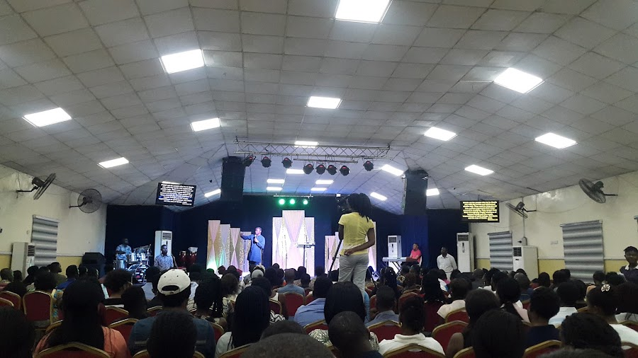

Three opportunities every week to worship, grow and encounter the presence of God. Services are lively, the Word is alive, and you are welcome just as you are.
Our main celebration — powerful praise, the undiluted Word of God and warm fellowship to start your week strong.
A mid-week revival hour — deep worship, the Word and an atmosphere charged with the presence of the Holy Spirit.
Bible study and prayer night — systematic study of the Word and time spent in the presence of God.

"For where two or three are gathered together in my name, there am I in the midst of them." — Matthew 18:20
Whether it's your first time in church or your first time with us, we want you to feel at home from the moment you arrive.
We are at 202a Aba Road, opposite Mobil Filling Station, Waterlines, Port Harcourt. Ample parking and easy access await you.
There's no dress code to meet God. Come comfortable, come as you are — just come.
After service, hang around. Meet people, ask questions and let someone pray with you.
Thou wilt keep him in perfect peace, whose mind is stayed on thee: because he trusteth in thee.Isaiah 26:3
Join us this Sunday at 10:00am. Bring a friend — there is room at The Rest Place.